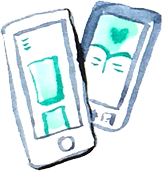
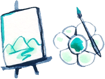
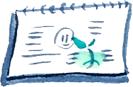
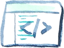

-

design portfolioA comprehensive look at my work. I've worked with Trulia, Blippy, and on side projects.
-

art portfolio
A quick pull together of my artwork. For a more up to date log, check out my blog.
-

sketch blog
Originally a sketch a day, now a process log of my art, sketchnotes, and writing.
-

daily lifestream
The newest addition to my family of sites: RSS feeds of articles and inspiration.